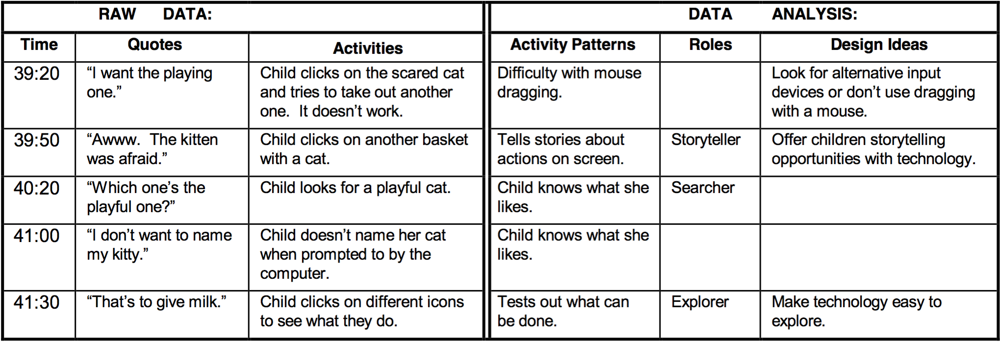

Cooperative inquiry is not a learning framework, rather it is a design framework related to methodologies like cooperative design, participatory design, contextual inquiry, activity theory, and situated action [2]. Cooperative inquiry sets itself apart from the other methods by (1) forming multidisciplinary partnerships with children, (2) focus on understanding context, activities and artifacts, and (3) iterative design of low- and high-tech prototypes. The goal is to go into an educational space and understand how it operates. In such spaces, there is a plethora of complex interactions that can run in parallel, require dynamic collaboration, and simply dispose of the assumed sequential order it was intended to take. Furthermore, many other design frameworks do not address differences between working with adult partners or child partners, hence this work begins to document how children function in such a role and how the end product can benefit from the children's perspectives [2].

When designing a technology, having users partner with a research team's efforts helps guide and direct the development as to meet the needs of actual use. This concept has been increasingly used in many disciplines across the globe and stated concretely, “We see the need for users to become full partners in the cooperative system development process ... . Full participation of (users) requires training and active cooperation, not just token representation.” [3]. This means that researchers, through partnership with users, observe and analyze the full breadth of an experience: activity patterns, communications, artifacts, and cultural relationships [2]. It is this relationship, between the designer and the user, that helps make sense of a dynamic and “messy” environment. The dual effort leads to the creation of diagrams and models for understanding the core experience, and storyboards and prototypes for testing new ideas. By combining all of this information a more useful technology is produced—cooperative inquiry.

Based on Beyer and Holtzblatt [1] work, development research needs to be done in the user's own environment. Taking Beyer and Holtsblatt work further, this form of contextual inquiry consists of adult and child researchers. Both of whom observe, gather data, take notes, and work with other children users. Having users take on the role of researcher is a prime distinction between this and other models of contextual inquiry.
Research role: Adult
Note Taking
In pairs, one adult records the activities of children while the other focuses on the dialogue. Time is noted for entries so the data can be synchronized. In addition to the note-takers, another adult (“the interactor”) would initiate discussion and ask questions about what the children were doing, or to ask about things they interacted with. However, it is more important for the interactor to become a part of the activity and to vocalize what is going on rather than disrupt the natural flow of the children's activity. The interactor also helped children feel more comfortable, rather than being silently observed (i.e., the children didn't feel as if they were “on stage”; [2]).
Visualizing Data
Diagrams of the notes were constructed to understand the children's patterns of activity and roles played. The notes consisted of time, quotes, activities, activity pattern, roles and design ideas. The first set of columns on the left are the raw data from the adults. In the columns to the right, activity patterns and roles are developed through grounded theory, and are based on the raw data columns. The final column is for design ideas, which is meant to start the process of idea generation and development.
Research role: Children
Note Taking
The children's notes often combine drawings with text to create cartoon-like summaries [2]. Once adult notes have been collected, they are compared and matched with child notes; sections of overlap are highlighted in order to capture the differing or similar perspectives. Many times over, the child summaries helped the adult partners see something they missed [2].
Children and adults work together to make design decisions and create low-tech prototypes. This is sometimes a difficult balance and one must be mindful of over-leading and power dynamics. However, with a little team management, the research partners can use a selection of tools to build and test ideas based on the contextual inquiry. The selection of tools matters: they should try to relate to the end product as well as be usable and familiar to the researchers. A mismatch in prototyping tools can result in confusion or frustration while the adults and children try to make the prototypes engaging and feel quality.
In order to understand what children truly gravitate to, and what they decide to use in an environment, give them a place to do just that. By having an area that is rich in technology with many choices, children can have meaningful experiences and adults can learn how children think and act when given control and autonomy. CHIkids is one such event that occurs over five days and gives a group of children hours to become fully immersed as digital storytellers, tech testers, and more [2]. Children not only can talk about their experiences, but can demonstrate with their behavior and time spent how technology impacts them and what they want in technology.
Learning through the process of design itself is a critical reason to participate in cooperative inquiry. This type of learning has been referenced to as a community of practice, where there is a mixture of skills and shared goals [4]. Domains that have been taught are: understanding design process, intergenerational teamwork, communication and collaboration skills, developing technical skills (e.g., building and making technology), and content knowledge involving the research. While the research is not purposely design to target learning outcomes, the involved and engaging processes often connect participants in similar ways as a learning framework might.
References
1. Beyer, H., & Holtzblatt, K., (1998). Contextual design: defining customer-centered systems, Morgan Kaufmann Publishers Inc., San Francisco, CA.
2. Druin, A. (1999, May). Cooperative inquiry: developing new technologies for children with children. In Proceedings of the SIGCHI conference on Human Factors in Computing Systems (pp. 592-599). ACM.
3. Greenbaum, J., & Kyng, M. (Eds.), (1991). Design at work: Cooperative design of computer systems.
4. Lave, J. (1992).Cognition in practice. Cambridge:Cambridge University Press.


Designed and Developed by Nicholas Persa